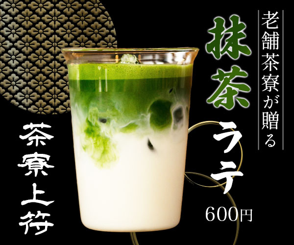
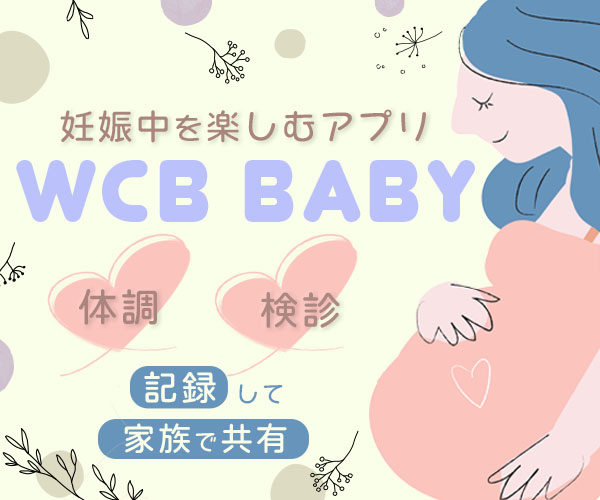
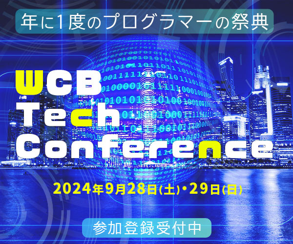
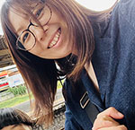

Design Works
-

制作時間：4時間
使用ツール：Illustrator / Photoshop
制作意図：ウェーブを使って滑らかで優しい雰囲気に仕上げた。
手書き文字を使い親しみやすさを演出した。
全体的に丸みのあるデザインにした。 -

制作時間：2時間40分
使用ツール：Illustrator / Photoshop
制作意図：背景の黒を和紙風にして高級感を出した。
金色でさらに高級感UP。
老舗感が出るようにフォントを選んだ。
老舗でありながら今時感が出るようなデザインに仕上げた。 -

制作時間：1時間25分
使用ツール：Illustrator / Photoshop
制作意図：ウェディングドレスを着て素敵な笑顔のモデルさんの写真を選んだ。
白とピンクで可愛らしく参加してみようかなと思えるようなデザインにした。 -

制作時間：3時間3分
使用ツール：Illustrator / Photoshop
制作意図：パステルカラーで可愛く仕上げた。
ダウンロードしたくなるような可愛いイラストと可愛い雰囲気を表現した。 -

制作時間：3時間15分
使用ツール：Illustrator / Photoshop
制作意図：子供っぽく可愛く表現するのが難しかった。
カラー選びにも時間がかかった。
最終的に可愛く仕上がったのではないかと思う。
もう一度チャレンジしたい。 -

制作時間：1時間40分
使用ツール：Illustrator / Photoshop
制作意図：近未来感がうまく出せた。
イベント名の色合いがポイント。
About Me

中 仁美
京都出身で今は千葉県に住んでいます。趣味は韓国ドラマ鑑賞です。
字幕なしでドラマが観られるようになりたい！
と韓国語の勉強に力を入れていたこともあります。
長年デザインやファッションに興味がありその思いを形にしたいと考えて
WEBデザインスクールで学びました。
分かりやすく伝えるデザインを意識して制作に取り組んでいます。
保育士としての経験も活かし相手に寄り添いながら丁寧に仕事に取り組んでまいります。
Design Tools
Illustrator/Photoshop
Skills
HTML/CSS/Wordpress